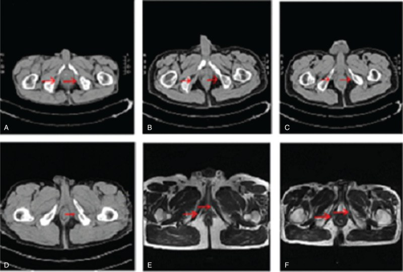
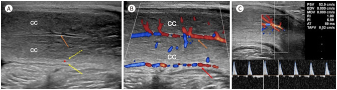

678 — Đánh giá & phục hồi chức năng cương – sinh sản ở bé trai sau chấn thương khung chậu/PFUI / Erectile and reproductive function after paediatric pelvic trauma
Tags: pattern:roi-loan-cuong pattern:roi-loan-xuat-tinh pattern:chan-thuong-khung-chau vung:khung-chau-nhi vung:sinh-duc-nam score:IIEF-5 score:PSV protocol:sieu-am-Doppler protocol:MRI protocol:TRUS protocol:xet-nghiem-noi-tiet
Mức chắc chắn (certainty): tổng hợp y văn (literature synthesis) — nhóm tự biên từ y văn mở (Europe PMC/PMC: Indian J Urol 2026, BMJ Open 2021, Arab J Urol 2015, OTA Int 2020, BMC Pediatr 2025, Transl Androl Urol 2026, J Korean Soc Radiol 2025) + ngưỡng tinh dịch WHO 2021. Ảnh CC BY 4.0 và CC BY-NC 4.0.
1. Tổng quan — vì sao chấn thương khung chậu làm hỏng cương và sinh sản
- Bối cảnh: ở trẻ trai, chấn thương khung chậu thường kèm đứt niệu đạo sau (pelvic fracture urethral injury — PFUI); tổn thương không chỉ ở niệu đạo mà còn ở thần kinh thể hang (cavernous nerve), động mạch thẹn trong–động mạch thể hang, cơ ngồi hang (ischiocavernosus muscle — ICM) và mô cương (corpus cavernosum). Hậu quả: rối loạn cương (erectile dysfunction — ED), rối loạn xuất tinh, suy sinh dục, hẹp niệu đạo tái phát.
- Ngưỡng định lượng bắt buộc:
- Sau PFUI: 34% (95% CI 25–45%) có ED; sau nắn chỉnh nội soi thì đầu (primary realignment) 16% (8–26%); tạo hình niệu đạo muộn cộng thêm 3% (2–5%), tức 37% de novo ED ở nhóm mổ muộn (PMC4435659).
- Sau gãy vòng chậu (mọi loại): 37% (26–50%), không phụ thuộc mức độ nặng của gãy (PMC8166614).
- Ở trẻ trai: 29,3% (12/41 được đánh giá) sau tạo hình niệu đạo, theo dõi trung vị 112 tháng; không khác biệt mổ sớm ≤ 10 ngày vs muộn ≥ 3 tháng (35,7% vs 25,9%, p > 0,05) (PMC13355245). Loạt 68 bé: ED 15,4% (nắn chỉnh thì đầu) vs 3,5% (dẫn lưu trên xương mu + mổ muộn), p = 0,231 (PMC11969931).
- Tổn thương cơ ngồi hang gặp 29,4% ở 776 nam gãy khung chậu; ED 27,3%, trong đó 39,6% hồi phục và 60,4% không hồi phục (PMC8022899).
- TẠI SAO hình ảnh trông như vậy (vật lý + mô bệnh):
- Siêu âm Doppler thể hang: cương là tăng dòng động mạch + giảm dòng tĩnh mạch thoát. Sau tiêm papaverine 30 mg (hoặc alprostadil 10–20 µg), đo vận tốc đỉnh tâm thu (peak systolic velocity — PSV): PSV < 25 cm/s = thiếu máu động mạch**; **25–30 cm/s = vùng giáp biên**; **≥ 30–35 cm/s = đủ dòng**. **Vận tốc cuối tâm trương (end-diastolic velocity — EDV) > 5 cm/s = hở tĩnh mạch (venous leak). Trong 97 nam PFUI: 93/97 thiếu máu động mạch thể hang, 83/97 thiếu máu động mạch lưng, 26/97 (26,8%) hở tĩnh mạch (PMC13375042) — tỷ lệ cao vì đây là nhóm đã chọn mổ.
- MRI: mô cương bình thường T2 tăng tín hiệu (máu + nội mô xốp); xơ hóa thể hang → T2 giảm; mỡ thay thế/teo cơ → T1 tăng, T2 giảm ở giai đoạn mạn. ICM dễ thấy trên CT/MRI lát mỏng khung chậu: đứt nguyên ủy, phù/máu tụ cấp, teo + thâm nhiễm mỡ mạn (PMC8022899).
- Nội tiết: testosterone toàn phần buổi sáng < 300 ng/dL (10,4 nmol/L) được coi là thấp (EAU/AUA); đo LH/FSH để phân biệt suy sinh dục nguyên phát (tinh hoàn) vs trung ương — quan trọng vì chấn thương có thể kèm tổn thương tinh hoàn hoặc dùng opioid/steroid sau chấn thương.
- Điểm cốt lõi: ED sau chấn thương là đa yếu tố (mạch máu – thần kinh – cơ – tâm lý – nội tiết) và có thể hồi phục (39,6% trong loạt ICM) → không kết luận vĩnh viễn sớm, nhưng phải đánh giá đúng lúc để không bỏ cửa sổ điều trị và không bỏ cơ hội trữ tinh trùng/mô tinh hoàn.
2. Mẫu hình (pattern) + chẩn đoán phân biệt theo cơ chế (Gamut)
- Khuôn 1 — ED sau chấn thương, cương buổi sáng còn. Gamut: tâm lý vs thuốc/đau vs nhẹ do mạch. Chốt: cương tự nhiên còn + Doppler bình thường → nghiêng tâm lý/thuốc; PSV < 25 cm/s → mạch máu.
- Khuôn 2 — ED + đau tầng sinh môn + không cương buổi sáng. Gamut: tổn thương động mạch thể hang vs tổn thương ICM vs đứt thần kinh thể hang. Chốt: PSV < 25 cm/s** → động mạch; **MRI có đứt/phù ICM hoặc teo–mỡ hóa** → cơ/ICM; **EDV > 5 cm/s → hở tĩnh mạch.
- Khuôn 3 — Cương được nhưng không xuất tinh/ít tinh dịch. Gamut: xuất tinh ngược (retrograde ejaculation) vs không xuất tinh do thần kinh vs tắc ống phóng tinh. Chốt: nước tiểu sau xuất tinh có tinh trùng → xuất tinh ngược; TRUS giãn ống phóng tinh/ống tinh → tắc.
- Khuôn 4 — Tinh hoàn nhỏ + testosterone thấp sau chấn thương. Gamut: suy sinh dục nguyên phát (tổn thương tinh hoàn/xoắn/chiếu xạ) vs suy sinh dục trung ương (tổn thương tuyến yên/opioid) vs chậm dậy thì sinh lý. Chốt: FSH/LH cao + testis nhỏ → nguyên phát; FSH/LH thấp → trung ương; tanner G1 + tuổi xương phù hợp → chờ.
- Khuôn 5 — Dương vật cong/lệch sau chấn thương. Gamut: xơ hóa thể hang (corporeal fibrosis) vs bệnh Peyronie vs ngắn dương vật sau tạo hình niệu đạo. Chốt: mảng xơ, T2 giảm, cong khi cương → xơ hóa/Peyronie.
- Gợi nhớ "VAND": Vascular (động mạch/hở tĩnh mạch), Anatomic (ICM, thể hang, niệu đạo), Neurologic (thần kinh thể hang/tủy), Drugs–Endocrine–Psychogenic (thuốc, nội tiết, tâm lý).
3. Bảng so sánh phân biệt (ma trận đối chiếu)
| Thực thể (entity) | Hình ảnh điển hình | Chốt vào (rule-in) | Chốt loại (rule-out) | Gợi ý xác nhận |
|---|---|---|---|---|
| Thiếu máu động mạch thể hang | Doppler sau papaverine: phổ PSV thấp, dạng sóng giảm biên độ; MRI có thể thấy tổn thương ĐM thẹn trong | PSV < 25 cm/s sau kích thích đủ | PSV ≥ 30–35 cm/s → không thiếu máu | Doppler lặp 2 lần; MRA/CTA chọn lọc |
| Hở tĩnh mạch (venous leak) | Doppler: EDV > 5 cm/s, phổ còn dòng tâm trương | EDV > 5 cm/s + cương kém duy trì | EDV < 5 cm/s → không hở tĩnh mạch đáng kể | Doppler; cavernosometry (hiếm dùng ở trẻ) |
| Tổn thương thần kinh thể hang | MRI không thấy dây thần kinh tổn thương trực tiếp; ICM/khung chậu là dấu hiệu gián tiếp; cương phản xạ mất | Mất cương buổi sáng + không đáp ứng sau tiêm + bối cảnh đứt niệu đạo sau | Đáp ứng tốt với tiêm → không thuần thần kinh | Đáp ứng ICI; NPT/RigiScan (≥ 18 tuổi) |
| Tổn thương cơ ngồi hang (ICM) | CT/MRI: đứt nguyên ủy, phù/máu tụ cấp; mạn: teo + mỡ hóa (T1 tăng, T2 giảm) | Đứt/phù ICM trên CT/MRI + ED | ICM liên tục, không phù → không do ICM | MRI lát mỏng khung chậu; EMG (nghiên cứu) |
| Xơ hóa thể hang | T2 thể hang giảm tín hiệu, mảng xơ, cong khi cương; thể tích giảm | T2 giảm + cong/mảng xơ | T2 đồng nhất bình thường → không xơ rõ | MRI; siêu âm mô mềm |
| Suy sinh dục | Tinh hoàn thể tích nhỏ trên siêu âm; không có tổn thương đặc hiệu | Testosterone sáng < 300 ng/dL + LH/FSH bất thường | Testosterone bình thường, LH/FSH bình thường | Xét nghiệm 2 lần sáng; siêu âm tinh hoàn |
| Xuất tinh ngược | Không có tổn thương trên TRUS; bàng quang chứa tinh trùng | Nước tiểu sau xuất tinh có tinh trùng | Không tinh trùng trong nước tiểu + azoospermia → nghĩ tắc/không xuất tinh | Xét nghiệm nước tiểu sau xuất tinh; TRUS |
| Tắc ống phóng tinh | TRUS: giãn ống phóng tinh/ống tinh, nang; MRI xác nhận | Giãn ống phóng tinh + thể tích tinh dịch thấp + fructose thấp | TRUS bình thường → không tắc | TRUS ± MRI; sinh thiết tinh hoàn khi cần |

(A) ICM bình thường; (B, C) đứt nguyên ủy ICM (mũi tên đỏ); (D) ICM phù, máu tụ, đầu xương gãy cắm vào cơ; (E, F) giai đoạn mạn: teo + thâm nhiễm mỡ, T2 giảm tín hiệu. Đây là tổn thương nhìn thấy được trên hình ảnh và liên quan trực tiếp tới ED. Nguồn: Chen Z et al., OTA Int 2020, Fig. 1, CC BY 4.0.Đọc Doppler thể hang đúng — các ngưỡng và giới hạn
- PSV: bình thường ≥ 30–35 cm/s; 25–30 giáp biên; < 25 thiếu máu. Đo hai bên, lấy bên cao hơn để tránh bỏ sót tổn thương một bên.
- EDV: > 5 cm/s gợi ý hở tĩnh mạch; EDV âm (dòng ngược cuối tâm trương) là bình thường.
- Sau tiêm 5–10 phút mới đo; lo lắng/phòng lạnh làm PSV thấp giả → lặp lại hoặc dùng kích thích hình ảnh.
- Giới hạn ở trẻ: Doppler thể hang chỉ đáng tin sau dậy thì (thể hang đủ lớn); trước dậy thì dựa vào lâm sàng + nội tiết + MRI, không áp ngưỡng người lớn.
4. Protocol đánh giá theo tuổi – điều trị – theo dõi + lưu đồ
- Mốc thời gian: đánh giá nền ngay sau chấn thương (khám sinh dục, siêu âm tinh hoàn, ghi nhận chức năng trước chấn thương nếu có); đánh giá chức năng ≥ 6 tháng sau mổ (khi qua giai đoạn hồi phục thần kinh sớm) và lặp lại 12 tháng; sau đó hằng năm tới tuổi trưởng thành.
- Theo tuổi:
- < 9 tuổi / trước dậy thì: không dùng IIEF-5; theo dõi Tanner, thể tích tinh hoàn (Prader), testosterone sáng nếu nghi; siêu âm tinh hoàn (thể tích, tổn thương, varicocele); không kết luận ED — chỉ ghi nhận và tư vấn.
- Dậy thì: Tanner G2 (tinh hoàn ≥ 4 mL) → đánh giá lại; testosteron sáng, LH/FSH; bắt đầu hỏi chức năng cương/xuất tinh; trữ tinh trùng nếu có thể.
- ≥ 18 tuổi: IIEF-5/SHIM (22–25 không ED; 8–21 nhẹ–trung bình; ≤ 7 nặng), Doppler thể hang, tinh dịch đồ.
- Xét nghiệm: testosterone toàn phần sáng (< 300 ng/dL = thấp) + LH/FSH + prolactin; tinh dịch đồ theo WHO 2021 (thể tích ≥ 1,4 mL, tổng số tinh trùng ≥ 39 triệu, di động toàn phần ≥ 42%, di động tiến tới ≥ 30%, hình thái bình thường ≥ 4%) — đây là phân vị 5 của quần thể sinh sản tự nhiên, không phải tiêu chuẩn chẩn đoán vô sinh.
- Hình ảnh:
- Siêu âm bìu: thể tích tinh hoàn, cấu trúc, varicocele, tổn thương sau chấn thương.
- MRI khung chậu lát mỏng (T1 + T2 fat-sat): ICM, thể hang, máu tụ, di lệch giải phẫu sau gãy; giai đoạn mạn tìm teo/mỡ hóa.
- Doppler thể hang (sau dậy thì) theo ngưỡng PSV/EDV ở trên.
- TRUS khi nghi tắc ống phóng tinh/xuất tinh ngược hoặc thể tích tinh dịch thấp.
- Điều trị (bậc thang):
- PDE5-I: tadalafil 5 mg/ngày × 6 tháng là phác đồ phục hồi đã dùng trong loạt PFUI (PMC13375042); meta-analysis: PDE5-I tăng IIEF-5 +6,5 điểm (95% CI 2,54–10,46) sau 3 tháng (PMC8166614).
- Bơm hút chân không (vacuum erection device) + vòng ép: hỗ trợ cương, duy trì mô.
- Tiêm nội thể hang alprostadil khi PDE5-I thất bại (sau dậy thì).
- Phẫu thuật: tạo hình mạch máu dương vật (penile revascularization) còn tranh luận, chọn ca rất chặt (PMC13145762); đặt thể hang nhân tạo chỉ ở người trưởng thành, sau khi đã tối ưu điều trị và sau dậy thì.
- Sinh sản: trữ tinh trùng ở tuổi dậy thì trước mọi can thiệp thêm; trữ mô tinh hoàn ở bé trước dậy thì là lựa chọn thử nghiệm theo ESHRE 2025 (PMC12314154); xuất tinh ngược → thu thập tinh trùng từ nước tiểu sau xuất tinh (rửa, dùng cho IVF/ICSI).
- Theo dõi: đánh giá lại cương – xuất tinh – nội tiết – tinh dịch mỗi 6–12 tháng; không ngừng theo dõi khi hết hẹp niệu đạo — ED và suy sinh dục có thể xuất hiện muộn.
flowchart TD
A[Bé trai sau chấn thương khung chậu/PFUI] --> B[Đánh giá nền: khám sinh dục, siêu âm tinh hoàn, ghi nhận chức năng trước chấn thương]
B --> C{Đã dậy thì? tinh hoàn >= 4 mL}
C -->|Chưa| D[Theo dõi Tanner + testosterone sáng nếu nghi; không kết luận ED]
C -->|Rồi| E[IIEF-5/SHIM + testosterone sáng + LH/FSH + tinh dịch đồ]
D --> F{Sau 6-12 tháng có dấu hiệu dậy thì muộn hoặc testis nhỏ?}
F -->|Có| G[Nội tiết: LH/FSH, testosterone; siêu âm tinh hoàn; MRI khung chậu]
F -->|Không| D
E --> H{ED?}
H -->|Có| I[Doppler thể hang sau papaverine: PSV/EDV]
I --> J{PSV < 25 cm/s?}
J -->|Có| K[Thiếu máu động mạch: PDE5-I, vacuum, cân nhắc revascularization]
J -->|Không| L{EDV > 5 cm/s?}
L -->|Có| M[Hở tĩnh mạch: PDE5-I liều cao, vacuum, ICI]
L -->|Không| N[Tâm lý/thuốc/nội tiết: đánh giá thêm]
H -->|Không| O{Xuất tinh/tinh dịch bất thường?}
O -->|Có| P[Nước tiểu sau xuất tinh + TRUS: xuất tinh ngược vs tắc ống phóng tinh]
O -->|Không| Q[Theo dõi hằng năm tới trưởng thành]
K --> R[Trữ tinh trùng khi dậy thì; tư vấn sinh sản]
M --> R
P --> R
5. Biến thể bình thường và cạm bẫy
- Cạm bẫy "dùng IIEF-5 cho trẻ": bộ câu hỏi này dành cho người có hoạt động tình dục; ở bé trai phải dùng Tanner + thể tích tinh hoàn + nội tiết, và hỏi cha mẹ/bệnh nhân về cương buổi sáng.
- Cạm bẫy "một lần Doppler thấp = tổn thương vĩnh viễn": lo lắng, lạnh, liều thuốc chưa đủ làm PSV thấp giả; phải lặp lại sau 5–10 phút, đo hai bên.
- Cạm bẫy "PSV bình thường là không ED": hở tĩnh mạch (EDV > 5 cm/s) và tổn thương thần kinh vẫn gây ED với PSV bình thường.
- Cạm bẫy "ED sau chấn thương là vĩnh viễn": 39,6% hồi phục trong loạt ICM; đừng đặt thể hang nhân tạo/prognosis xấu quá sớm.
- Cạm bẫy "không xuất tinh = chắc chắn tắc": phải loại xuất tinh ngược bằng nước tiểu sau xuất tinh trước khi nghĩ tắc ống phóng tinh.
- Cạm bẫy "testosterone thấp một lần": đo buổi sáng, 2 lần, kèm LH/FSH; testosterone thấp sau chấn thương có thể do opioid/steroid/đau–stress, không chỉ do tổn thương tinh hoàn.
- Cạm bẫy "tinh dịch đồ bất thường = vô sinh": ngưỡng WHO là phân vị 5, không phải chẩn đoán; cần lặp lại và đánh giá lâm sàng.
- Cạm bẫy bỏ sót ICM: ED sau gãy khung chậu có thể do ICM — đọc kỹ CT/MRI khung chậu (đứt nguyên ủy, phù, teo–mỡ hóa), đừng chỉ nhìn niệu đạo.
6. Tự lượng giá — Blind Quiz
Ca 1 — Bé trai 12 tuổi, gãy khung chậu do tai nạn xe đạp, đứt niệu đạo sau. Đọc CT/MRI khung chậu.
- Gợi ý: đau tầng sinh môn, không đánh giá được cương trước dậy thì.
- Câu hỏi: Mũi tên đỏ chỉ gì? Tổn thương này giải thích ED bằng cơ chế nào? Có kết luận ED vĩnh viễn ở tuổi này không?
Bấm để hiện đáp án (findings + chẩn đoán)
- Findings: (B, C) đứt nguyên ủy cơ ngồi hang (ICM); (D) phù, máu tụ, đầu xương gãy cắm vào cơ; (E, F) mạn: teo + mỡ hóa, T2 giảm.
- Cơ chế: ICM là cơ chèn ép thể hang khi cương; tổn thương → cương không đủ cứng, kèm tổn thương động mạch/thần kinh thể hang cùng vùng.
- Không kết luận vĩnh viễn: ở tuổi này chưa đánh giá được bằng IIEF-5/Doppler; theo dõi Tanner, thể tích tinh hoàn, testosterone, đánh giá lại khi dậy thì; 39,6% ca ICM hồi phục.
- Nguồn ảnh: Chen Z et al., OTA Int 2020, Fig. 1, CC BY 4.0.
Ca 2 — Nam 22 tuổi (tiền sử PFUI lúc 10 tuổi), ED 2 năm. Đọc Doppler sau papaverine.

- Gợi ý: hình chuẩn của người bình thường để so sánh; bệnh nhân của bạn có PSV 18 cm/s hai bên.
- Câu hỏi: Các trị số trên phổ bình thường là bao nhiêu? PSV 18 cm/s xếp loại gì? Cần làm gì tiếp?
Bấm để hiện đáp án (findings + chẩn đoán)
- Findings: (A) giải phẫu siêu âm dọc; (B) Doppler màu động mạch thể hang (CC) và động mạch lưng; (C) phổ PSV 52,9 cm/s, EDV 0,000 cm/s — bình thường.
- Ngưỡng: PSV ≥ 30–35 cm/s bình thường; < 25 cm/s thiếu máu. Bệnh nhân PSV 18 cm/s → thiếu máu động mạch thể hang.
- Tiếp theo: lặp Doppler (loại yếu tố gây nhiễu), đánh giá hở tĩnh mạch (EDV), thử PDE5-I (tadalafil 5 mg/ngày × 6 tháng), vacuum; cân nhắc revascularization rất chọn lọc; tư vấn sinh sản + trữ tinh trùng.
- Nguồn ảnh: Sharma A et al., J Korean Soc Radiol 2025, Fig. 2, CC BY-NC 4.0 (giữ nguyên bản).
Ca 3 — Nam 19 tuổi, PFUI lúc 8 tuổi, cương được nhưng "không có tinh dịch" sau xuất tinh.
- Gợi ý: thể tích tinh dịch rất thấp, pH nước tiểu sau xuất tinh kiềm.
- Câu hỏi: Hai chẩn đoán chính? Xét nghiệm/định hình nào chốt? Điều trị sinh sản ra sao?
Bấm để hiện đáp án (findings + chẩn đoán)
- Chẩn đoán: xuất tinh ngược (retrograde ejaculation) do hở cổ bàng quang sau chấn thương/mổ, hoặc tắc ống phóng tinh.
- Chốt: nước tiểu sau xuất tinh có tinh trùng → xuất tinh ngược; TRUS giãn ống phóng tinh/ống tinh → tắc. Tinh dịch thể tích thấp (< 1,4 mL) và fructose thấp gợi ý tắc/thiếu đóng góp túi tinh.
- Điều trị: thu thập tinh trùng từ nước tiểu sau xuất tinh (rửa, dùng cho IVF/ICSI); trữ tinh trùng trước mọi can thiệp; nếu tắc → can thiệp qua TRUS/chuyển tiết niệu; tư vấn trữ mô tinh hoàn nếu không lấy được tinh trùng.
- Nguồn số liệu: WHO 2021 (PMC10929669); ESHRE 2025 (PMC12314154).
Bài liên quan chéo
- 642 – Theo dõi & biến chứng dài hạn sau chấn thương đường tiết niệu dưới ở trẻ
- 637 – Chấn thương bàng quang & niệu đạo nhi
- 645 – Vỡ khung chậu ở trẻ
- 643 – Chấn thương âm đạo – đáy chậu & sinh dục ngoài ở trẻ
- 638 – Khối bìu–tinh hoàn ở trẻ
- 636 – Cấp cứu niệu–sinh dục nhi: chấn thương thận & xoắn tinh hoàn
Ảnh
images/678_cuong-sinh-san_MRI_PMC8022899.jpg,images/678_cuong-sinh-san_US-Doppler_PMC11973117.jpg. Nguồn + giấy phép từng ảnh trongimages/CREDITS.md.
Không dùng để chẩn đoán độc lập khi chưa có người hướng dẫn.